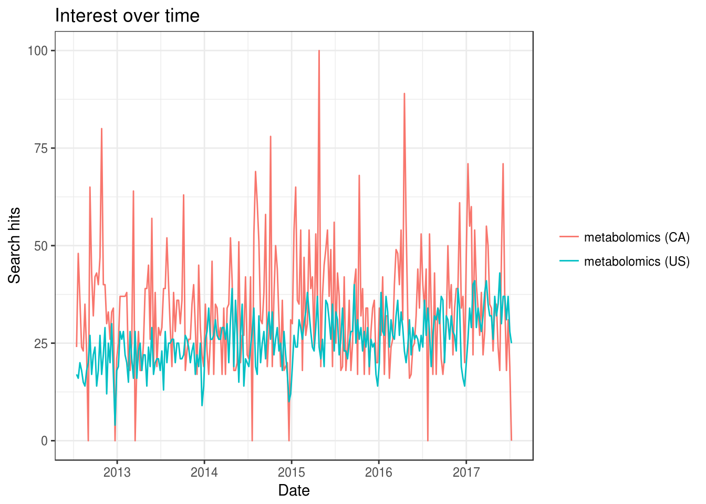
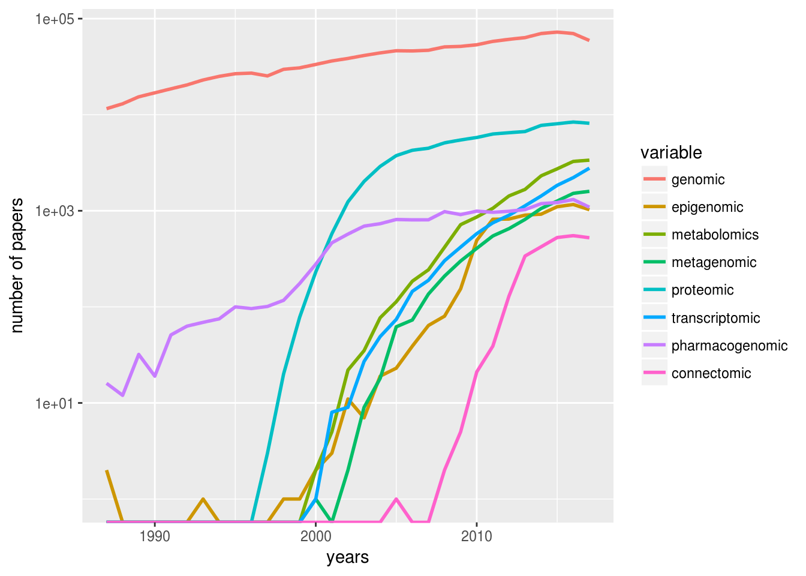

Chapter 1 Introduction
Information in living organism commuicates along the Genomics, Transcriptomics, Proteomics and Metabolomics in Central dogma. Following such stream, we might answer certain problems in different scales from individual, population, community to ecosystem. Metabolomics (i.e., the profiling and quantitation of metabolites in body fluids) is a relatively new field of “omics” studies. Different from other omics studies, metabolomics always focused on small moleculars with much lower mass than polypeptide, around m/z 100-1000. Metabolomics studies are always performed in GC/MS, GC*GC/MS(Tian et al. 2016), LC/MS or NMR. This workflow concerns mass spectrum based metabolomics.
1.1 History
According to this book section(Kusonmano, Vongsangnak, and Chumnanpuen 2016):
Figure 1.1: Metabolomics timeline during pre- and post-metabolomics era
2000-1500 BC some traditional Chinese doctors who began to evaluate the glucose level in urine of diabetic patients using ants
300 BC ancient Egypt and Greece that traditionally determine the urine taste to diagnose human diseases
1913 Joseph John Thomson and Francis William Aston mass spectrometry
1946 Felix Bloch and Edward Purcell Nuclear magnetic resonance
late 1960s chromatographic separation technique
1971 Pauling’s research team “Quantitative Analysis of Urine Vapor and Breath by Gas–Liquid Partition Chromatography”
Willmitzer and his research team pioneer group in metabolomics which suggested the promotion of the metabolomics field and its potential applications from agriculture to medicine and other related areas in the biological sciences
2007 Human Metabolome Project consists of databases of approximately 2500 metabolites, 1200 drugs, and 3500 food components
post-metabolomics era high-throughput analytical techniques
1.2 Reviews and tutorials
Some new reviews and tutorials related to this workflow could be found in those papers(Alonso, Marsal, and Julià 2015; Cajka and Fiehn 2016; Lu and Xu 2008; Schrimpe-Rutledge et al. 2016; Townsend et al. 2016; Barnes et al. 2016b; Barnes et al. 2016a).
Also I noticed more and more papers showed a bunch of data process methods as strategy for metabolomics(Watrous et al. 2017; Robbat Jr. et al. 2017). If you only need metabolomics as tools to tell your story, such stratrgy could be a quick start for you.
For software, check this review(Misra and van der Hooft 2016).
1.3 Platform for metabolomics
1.3.1 XCMS online
XCMS online is hosted by Scripps Institute. If your datasets are not large, XCMS online would be the best option for you. Recently they updated the online version to support more functions for systems biology. They use metlin and iso metlin to annotate the MS/MS data. Pathway analysis is also supported. Besides, to accelerate the process, xcms online employed stream (windows only). You could use stream to connect your instrument workstation to their server and process the data along with the data acquisition automate. They also developed apps for xcms online, but I think apps for slack would be even cooler to control the data processing.
1.3.2 PRIMe
PRIMe is from RIKEN and UC Davis. It supports mzML and major MS vendor formats. They defined own file format ABF and eco-system for omics studies. The software are updated almost everyday. You could use MS-DIAL for untargeted analysis and MRMOROBS for targeted analysis. For annotation, they developed MS-FINDER and statistic tools with excel. This platform could replaced the dear software from company and well prepared for MS/MS data analysis and lipidomics. They are open source, work on Windows and also could run within mathmamtics. However, they don’t cover pathway analysis. Another feature is they always show the most recently spectral records from public repositories. You could always get the updated MSP spectra files for your own data analysis.
If you make GC-MS based metabolomics, this paper(Matsuo et al. 2017) could be nice start.
1.3.3 OpenMS
OpenMS is another good platform for mass spectrum data analysis developed with C++. You could use them as plugin of KNIME. I suggest anyone who want to be a data scientist to get familiar with platform like KNIME because they supplied various API for different programme language, which is easy to use and show every steps for others. Also TOPPView in OpenMS could be the best software to visualize the MS data. You could always use the metabolomics workflow to train starter about details in data processing. pyOpenMS and OpenSWATH are also used in this platform. If you want to turn into industry, this platform fit you best because you might get a clear idea about solution and workflow.
1.3.4 MZmine 2
MZmine 2 has three version developed on Java platform and the lastest version is included into MSDK. Similar function could be found from MZmine 2 as shown in XCMS online. However, MZmine 2 do not have pathway analysis. You could use metaboanalyst for that purpose. Actually, you could go into MSDK to find similar function supplied by ProteoSuite and Openchrom. If you are a experienced coder for Java, you should start here.
1.3.5 XCMS
xcms is different from xcms online while they might share the same code. I used it almost every data to run local metabolomics data analysis. Recently, they will change their version to xcms 3 with major update for object class. Their data format would integrate into the MSnbase package and the parameters would be easy to set up for each step. Normally, I will use msconvert-IPO-xcms-xMSannotator-metaboanalyst as workflow to process the offline data. It could accelerate the process by parallel processing. However, if you are not familiar with R, you would better to choose some software above.
1.3.6 Emory MaHPIC
This platform is composed by several R packages from Emory University including apLCMS to collect the data, xMSanalyzer to handle automated pipeline for large-scale, non-targeted metabolomics data, xMSannotator for annotation of LC-MS data and Mummichog for pathway and network analysis for high-throughput metabolomics. This platform would be preferred by someone from environmental science to study exposome. I always use xMSannotator to annotate the LC-MS data.
1.3.7 Others
MAVEN from Princeton University
RAMclustR from Colorado State University
MAIT based on xcms
enviGCMS from me
Metabolights for sharing data
1.4 Trends in Metabolomics
library(gtrendsR)
res <- gtrends(c("metabolomics", "metabolomics"), geo = c("CA","US"))
plot(res)
library(rentrez)
papers_by_year <- function(years, search_term){
return(sapply(years, function(y) entrez_search(db="pubmed",term=search_term, mindate=y, maxdate=y, retmax=0)$count))
}
years <- 1987:2017
total_papers <- papers_by_year(years, "")
omics <- c("genomic", "epigenomic", "metabolomics", "metagenomic", "proteomic", "transcriptomic", "pharmacogenomic", "connectomic")
trend_data <- sapply(omics, function(t) papers_by_year(years, t))
trend_props <- trend_data/total_papers
library(reshape)
library(ggplot2)
trend_df <- melt(data.frame(years, trend_data), id.vars="years")
p <- ggplot(trend_df, aes(years, value, colour=variable))
p + geom_line(size=1) + scale_y_log10("number of papers")## Warning: Transformation introduced infinite values in continuous y-axis
1.4.1 Quantitative Metabolomics
Those papers (Kapoore and Vaidyanathan 2016; Jorge, Mata, and António 2016).
1.4.2 High throughput Metabolomics
Those papers (Zampieri et al. 2017)
- Cohort size
- Temporal resolution
- Spatial resolution
1.5 Data sharing
1.5.1 Data hosting
See this paper(Haug, Salek, and Steinbeck 2017):
MetaboLights EU based
The Metabolomics Workbench US based
MetabolomeXchange search engine
1.5.2 MS Database with annotation
1.5.2.1 MS/MS
1.5.3 Compounds Database
1.5.4 Pathway Database
1.6 Workflow
References
Tian, Tze-Feng, San-Yuan Wang, Tien-Chueh Kuo, Cheng-En Tan, Guan-Yuan Chen, Ching-Hua Kuo, Chi-Hsin Sally Chen, Chang-Chuan Chan, Olivia A. Lin, and Y. Jane Tseng. 2016. “Web Server for Peak Detection, Baseline Correction, and Alignment in Two-Dimensional Gas Chromatography Mass Spectrometry-Based Metabolomics Data.” Anal. Chem. 88 (21): 10395–10403. doi:10.1021/acs.analchem.6b00755.
Kusonmano, Kanthida, Wanwipa Vongsangnak, and Pramote Chumnanpuen. 2016. “Informatics for Metabolomics.” In Translational Biomedical Informatics, 91–115. Advances in Experimental Medicine and Biology. Springer, Singapore. doi:10.1007/978-981-10-1503-8_5.
Alonso, Arnald, Sara Marsal, and Antonio Julià. 2015. “Analytical Methods in Untargeted Metabolomics: State of the Art in 2015.” Front Bioeng Biotechnol 3 (March). doi:10.3389/fbioe.2015.00023.
Cajka, Tomas, and Oliver Fiehn. 2016. “Toward Merging Untargeted and Targeted Methods in Mass Spectrometry-Based Metabolomics and Lipidomics.” Anal. Chem. 88 (1): 524–45. doi:10.1021/acs.analchem.5b04491.
Lu, Xin, and Guowang Xu. 2008. “LC-MS Metabonomics Methodology in Biomarker Discovery.” In Biomarker Methods in Drug Discovery and Development, edited by Feng Wang, 291–315. Methods in Pharmacology and Toxicology. Humana Press. doi:10.1007/978-1-59745-463-6_14.
Schrimpe-Rutledge, Alexandra C., Simona G. Codreanu, Stacy D. Sherrod, and John A. McLean. 2016. “Untargeted Metabolomics Strategies and Emerging Directions.” J. Am. Soc. Mass Spectrom. 27 (12): 1897–1905. doi:10.1007/s13361-016-1469-y.
Townsend, Mary K., Hugues Aschard, Immaculata De Vivo, Karin B. Michels, and Peter Kraft. 2016. “Genomics, Telomere Length, Epigenetics, and Metabolomics in the Nurses’ Health Studies.” Am J Public Health 106 (9): 1663–8. doi:10.2105/AJPH.2016.303344.
Barnes, Stephen, H. 2016b. “Training in Metabolomics Research. II. Processing and Statistical Analysis of Metabolomics Data, Metabolite Identification, Pathway Analysis, Applications of Metabolomics and Its Future.” J. Mass Spectrom. 51 (8): 535–48. doi:10.1002/jms.3780.
Barnes, Stephen, H. Paul Benton, Krista Casazza, Sara J. Cooper, Xiangqin Cui, Xiuxia Du, Jeffrey Engler, et al. 2016a. “Training in Metabolomics Research. I. Designing the Experiment, Collecting and Extracting Samples and Generating Metabolomics Data.” J. Mass Spectrom. 51 (7): 461–75. doi:10.1002/jms.3782.
Watrous, Jeramie D., Mir Henglin, Brian Claggett, Kim A. Lehmann, Martin G. Larson, Susan Cheng, and Mohit Jain. 2017. “Visualization, Quantification, and Alignment of Spectral Drift in Population Scale Untargeted Metabolomics Data.” Anal. Chem. 89 (3): 1399–1404. doi:10.1021/acs.analchem.6b04337.
Robbat Jr., Albert, Nicole Kfoury, Eugene Baydakov, and Yuriy Gankin. 2017. “Optimizing Targeted/Untargeted Metabolomics by Automating Gas Chromatography/Mass Spectrometry Workflows.” Journal of Chromatography A 1505 (July): 96–105. doi:10.1016/j.chroma.2017.05.017.
Misra, Biswapriya B., and Justin J. J. van der Hooft. 2016. “Updates in Metabolomics Tools and Resources: 20142015.” ELECTROPHORESIS 37 (1): 86–110. doi:10.1002/elps.201500417.
Matsuo, Teruko, Hiroshi Tsugawa, Hiromi Miyagawa, and Eiichiro Fukusaki. 2017. “Integrated Strategy for Unknown EI, Multivariate Analysis, EI, and Retention Index Prediction.” Anal. Chem. 89 (12): 6766–73. doi:10.1021/acs.analchem.7b01010.
Kapoore, Rahul Vijay, and Seetharaman Vaidyanathan. 2016. “Towards Quantitative Mass Spectrometry-Based Metabolomics in Microbial and Mammalian Systems.” Phil. Trans. R. Soc. A 374 (2079): 20150363. doi:10.1098/rsta.2015.0363.
Jorge, Tiago F., Ana T. Mata, and Carla António. 2016. “Mass Spectrometry as a Quantitative Tool in Plant Metabolomics.” Phil. Trans. R. Soc. A 374 (2079): 20150370. doi:10.1098/rsta.2015.0370.
Zampieri, Mattia, Karthik Sekar, Nicola Zamboni, and Uwe Sauer. 2017. “Frontiers of High-Throughput Metabolomics.” Current Opinion in Chemical Biology, Omics, 36 (February): 15–23. doi:10.1016/j.cbpa.2016.12.006.
Haug, Kenneth, Reza M Salek, and Christoph Steinbeck. 2017. “Global Open Data Management in Metabolomics.” Current Opinion in Chemical Biology, Omics, 36 (February): 58–63. doi:10.1016/j.cbpa.2016.12.024.
Guitton, Yann, Marie Tremblay-Franco, Gildas Le Corguillé, Jean-François Martin, Mélanie Pétéra, Pierrick Roger-Mele, Alexis Delabrière, et al. 2017. “Create, Run, Share, Publish, and Reference Your LC, FIA, GC, and NMR Data Analysis Workflows with the Workflow4Metabolomics 3.0 Galaxy Online Infrastructure for Metabolomics.” The International Journal of Biochemistry & Cell Biology 93 (Supplement C): 89–101. doi:10.1016/j.biocel.2017.07.002.